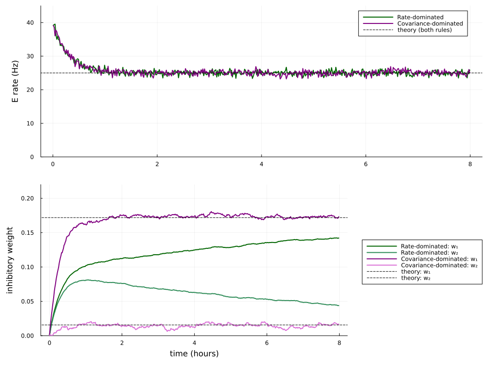
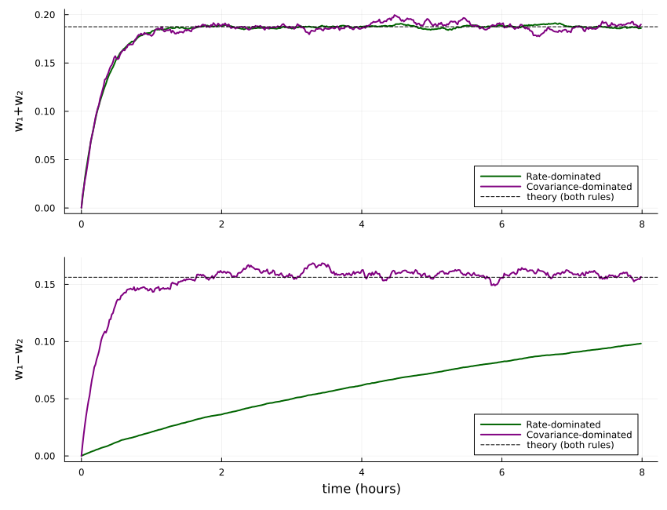
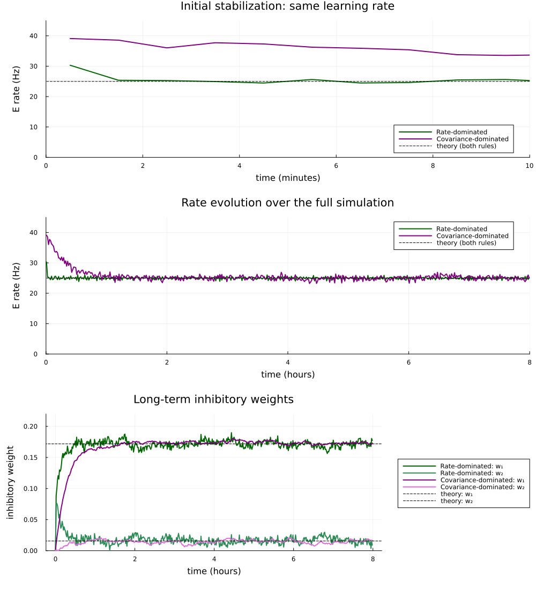

Weight specialization in a three-neuron inhibitory motif

The schematic's Wₑ, W₁, and W₂ correspond to w_IE, w₁, and w₂ in the code. Adaptive inputs maintain the target mean inhibitory rate r_I.
In the two-neuron example, inhibitory plasticity stabilizes an excitatory neuron. Here we ask a second question: how do different STDP rules compare, when two inhibitory neurons compete with one another for stabilizing an excitatory neurons?
The motif contains one excitatory neuron E and two inhibitory neurons I₁ and I₂. Both inhibit E through plastic weights w₁ and w₂, but only I₁ receives fixed excitation from E. This reciprocal connection produces a correlation with E in inhibitory neuron 1 but not in 2.
We compare rate-dominated and covariance-dominated symmetric STDP. We calibrate both rules to the same predicted E rate and choose learning rates that give the same predicted relaxation time for w₁+w₂. This lets us compare weight specialization while controlling for the speed of overall stabilization.
Setup and parameters
Install the documentation environment and run this file from the repository:
julia --project=docs -e 'using Pkg; Pkg.develop(PackageSpec(path=pwd())); Pkg.instantiate()'
julia --project=docs docs/literate/06_three_neuron_inhibitory_motif.jlTime is measured in seconds, firing rates in Hz, and weights are integrated kernel strengths. The eight hours below refer to simulated time. A single recording_interval controls the rate bins and weight recording for every run and figure; we use 60 seconds throughout.
using Random
using HawkesPlasticNetworks
const H = HawkesPlasticNetworks
const τ_syn = 30E-3
const τ_plast = 50E-3
const r_I = 80.0
const h_E = 40.0
const r_E_target = 25.0
const w_IE = 0.5
const weight_start = 1E-4
const weight_min = 1E-8
const weight_max = 100.0
const recording_interval = 60.0;The package uses post <- pre ordering. Thus w_IE means I₁ <- E, while w₁ and w₂ mean E <- I₁ and E <- I₂. All stored weights are nonnegative magnitudes: the inhibitory population type supplies the minus sign when computing E's intensity.
Keep the inhibitory operating point fixed
To isolate the role of correlations, we adjust the external inputs so that both inhibitory neurons remain near r_I. In a linear mean-rate approximation,
\[r_E = h_E-(w_1+w_2)\,r_I,\qquad h_{I_1}=r_I-w_{IE}\,r_E,\qquad h_{I_2}=r_I.\]
function set_inhibitory_input_for_target!(
input_i::Vector{<:Real},r_I::Real,w_IE::Real,
w₁::Real,w₂::Real,h_E::Real)
r_E = H.hardbounds(h_E-(w₁+w₂)*r_I,0.0,Inf)
input_i[1] = r_I-w_IE*r_E
input_i[2] = r_I
return nothing
end;Analytical predictions
The motif coefficients combine the STDP window with the source neuron's interaction kernel. M10 describes the forward E <- I interaction and includes its inhibitory sign; M01 describes the backward I <- E interaction. Higher order interactions are neglected, but vanishing small in these settings. With symmetric STDP and equal synaptic timescales, M10 = -M and M01 = M, where M > 0.
function get_motif_coefficients(rule::H.PlasticitySymmetricSTDP)
population_e = H.PopulationExpKernelExcitatory(1,τ_syn;label="e")
population_i = H.PopulationExpKernelInhibitory(2,τ_syn;label="i")
return (
M10=H.get_motif_coef_M10(rule,population_i),
M01=H.get_motif_coef_M01(rule,population_e))
end;Let s = w₁+w₂ denote total inhibition and d = w₁-w₂ its allocation. The first-order mean plasticity drifts are
\[\dot w_1=\eta\,[\alpha_{\mathrm{pre}}\,r_I+ (\alpha_{\mathrm{post}}+B\,r_I)\,r_E-M\,w_1\,r_I+M\,w_{IE}\,r_E], \qquad \dot w_2=\eta\,[\alpha_{\mathrm{pre}}\,r_I+ (\alpha_{\mathrm{post}}+B\,r_I)\,r_E-M\,w_2\,r_I].\]
Summing these equations and substituting r_E = h_E-s*r_I gives a relaxation coefficient c₂ = M*(1+w_IE)+2*(αpost+B*r_I). Subtracting them gives ḋ = η*M*(w_IE*r_E-r_I*d). Thus the characteristic times are
\[\tau_{\mathrm{sum}}=\frac{1}{\eta\,r_I\,c_2},\qquad \tau_{\mathrm{difference}}=\frac{1}{\eta\,r_I\,M}.\]
The difference is driven by the changing E rate as the sum settles. At a fixed point, s*=(h_E-r_E*)/r_I and d*=w_IE*r_E*/r_I. Solving yields the predictions below.
function motif_predictions(rule::H.PlasticitySymmetricSTDP,w_IE::Real=w_IE)
M = abs(get_motif_coefficients(rule).M10)
c₂ = M*(1+w_IE)+2*(rule.αpost+rule.B*r_I)
r_E = (M*h_E-2*rule.αpre*r_I)/c₂
w₁ = (h_E+(w_IE-1)*r_E)/(2*r_I)
w₂ = (h_E-(1+w_IE)*r_E)/(2*r_I)
τ_sum = 1/(rule.η*r_I*c₂)
τ_difference = 1/(rule.η*r_I*M)
return (;M,c₂,r_E,w₁,w₂,τ_sum,τ_difference,
ratio=c₂/M)
end;Both rules use αpost = 0. The value of αpre is chosen by solving the fixed-point expression for the desired r_E_target. So, summing up, both rate-dominated and covariance-dominated rule have the same target rate, and the same convergence time to it.
PlasticitySymmetricSTDP takes (η, B, αpre, αpost, τ_plus, γ, weights). Its trace sizes and structural-zero mask come from weights: initialize the two plastic weights to small nonzero values, since zeros at rule construction are excluded from plasticity.
function plasticity_for_target_rate(η::Real,B::Real,γ::Real)
weights = fill(weight_start,1,2)
αpost = 0.0 # here αpost is always zero
reference = H.PlasticitySymmetricSTDP(
η,B,0.0,0.0,τ_plast,γ,weights;
weight_min=weight_min,weight_max=weight_max)
prediction = motif_predictions(reference)
αpre = (prediction.M*h_E-r_E_target*prediction.c₂)/(2*r_I)
return H.PlasticitySymmetricSTDP(
η,B,αpre,αpost,τ_plast,γ,weights;
weight_min=weight_min,weight_max=weight_max)
end;Build and simulate the motif
Use one population for E and one for the two inhibitory neurons. The fixed excitation matrix has two rows and one column; the second row is exactly zero because the I₂ <- E connection is absent. The plastic inhibition matrix has one row and two columns, matching the rule constructed above.
function simulate_motif(
rule::H.PlasticitySymmetricSTDP,w_IE::Real=w_IE;
simulation_duration::Real=8*3600.0,
recording_interval::Real=recording_interval,
w₁_start::Real=weight_start,w₂_start::Real=weight_start,
input_update_interval::Real=0.2,seed::Integer=0)
Random.seed!(seed)
H.reset!(rule)
population_e = H.PopulationExpKernelExcitatory(1,τ_syn;label="e")
population_i = H.PopulationExpKernelInhibitory(2,τ_syn;label="i")
connection_ie = H.ConnectionWithWeights(
population_i,reshape([Float64(w_IE),0.0],2,1),population_e)
connection_ei = H.ConnectionWithWeights(
population_e,[Float64(w₁_start) Float64(w₂_start)],population_i;
plasticity_rules=(rule,))
# Connected populations pair each incoming connection with its source.
connected_e = H.ConnectedPopulationExpKernel(
population_e,[h_E],(connection_ei,population_i))
connected_i = H.ConnectedPopulationExpKernel(
population_i,zeros(2),(connection_ie,population_e))
set_inhibitory_input_for_target!(
connected_i.input,r_I,w_IE,w₁_start,w₂_start,h_E)
# Population rates are binned spike counts divided by bin duration and
# population size: the I recorder reports the mean over I₁ and I₂.
recorder_e = H.RecorderPopulationRate(
population_e,simulation_duration;Δt=recording_interval)
recorder_i = H.RecorderPopulationRate(
population_i,simulation_duration;Δt=recording_interval)
recorder_weights = H.WeightMatrixRecorder(
connection_ei.weights,recording_interval,simulation_duration)
# DoEveryDt runs on the first spike event at least this interval after
# its previous invocation, rather than on an independent time grid.
function update_inhibitory_input!(
_time,_population_index,_population_label,_neuron_index)
set_inhibitory_input_for_target!(
connected_i.input,r_I,connection_ie.weights[1,1],
connection_ei.weights[1,1],connection_ei.weights[1,2],h_E)
return nothing
end
input_callback = H.DoEveryDt(
update_inhibitory_input!,input_update_interval;Tstart=0.0)
network = H.RecurrentNetworkExpKernel(
(connected_e,connected_i),
(recorder_e,recorder_i,recorder_weights,input_callback))
# Network reset clears population traces and recorders. Rule traces need
# the separate reset above; weights and external inputs are not reset.
H.reset!(network)
time_now = 0.0
while time_now < simulation_duration
time_now = H.dynamics_step!(time_now,network)
end
# Rate content omits the last incomplete bin. Weight snapshots are
# event-triggered and have dimensions (time, post, pre), so retain their
# own time vector instead of assuming it equals the rate time vector.
content_e = H.get_content(recorder_e)
content_i = H.get_content(recorder_i)
content_weights = H.get_content(recorder_weights)
return (
rate_times=content_e.times,rates_e=content_e.rates,
rates_i=content_i.rates,weight_times=content_weights.times,
w₁=vec(content_weights.weights[:,1,1]),
w₂=vec(content_weights.weights[:,1,2]),
final_weights=copy(connection_ei.weights),
final_input_i=copy(connected_i.input),
prediction=motif_predictions(rule,w_IE))
end;Configure and run the comparison
With B = 1 (rate-dominated rule), the timing window contributes a rate-product term; the calibrated negative αpre supplies homeostatic depression. With B = 0 (covariance-dominated rule), positive and negative timing contributions have zero net area, eliminating the independent-rate product and emphasizing covariance. γ sets the negative trace's time constant relative to τ_plast; it has no effect on the B = 1 window because that window's negative amplitude is zero.
First compute each sum coefficient with a reference learning rate, then choose η_rate*c₂_rate = η_covariance*c₂_covariance. So that the sum of inhibitory weights (i.e. the sum mode) and the excitatory rate converge with equal speed for the two rules.
using Plots
reference_rate = plasticity_for_target_rate(1.0,1.0,123456.0)
reference_covariance = plasticity_for_target_rate(1.0,0.0,10.0)
η_covariance = 3E-6
η_rate = η_covariance*motif_predictions(reference_covariance).c₂ /
motif_predictions(reference_rate).c₂
rule_rate = plasticity_for_target_rate(η_rate,1.0,123456.0)
rule_covariance = plasticity_for_target_rate(η_covariance,0.0,10.0)
prediction_rate = motif_predictions(rule_rate)
prediction_covariance = motif_predictions(rule_covariance);The sum timescale is about 0.29 hours for both rules (equal by construction). The difference timescale is about 7.88 hours for the rate-dominated rule and 0.44 hours for the covariance-dominated rule. The ratio is independent of η.
for (name,prediction) in (("Rate-dominated",prediction_rate),
("Covariance-dominated",prediction_covariance))
println(name,": τ_sum = ",round(prediction.τ_sum/3600;digits=2),
" h, τ_difference = ",round(prediction.τ_difference/3600;digits=2),
" h, ratio = ",round(prediction.ratio;digits=2))
end
simulation_duration = 8*3600.0
result_rate = simulate_motif(rule_rate;
simulation_duration=simulation_duration,
recording_interval=recording_interval,seed=1)
result_covariance = simulate_motif(rule_covariance;
simulation_duration=simulation_duration,
recording_interval=recording_interval,seed=2);Rate-dominated: τ_sum = 0.29 h, τ_difference = 7.88 h, ratio = 27.1
Covariance-dominated: τ_sum = 0.29 h, τ_difference = 0.44 h, ratio = 1.5Stabilization and individual inhibitory weights
Solid curves show simulation results; dashed lines give first-order fixed points. Both rules predict r_E* = 25 Hz, w₁* = 0.171875, and w₂* = 0.015625. I₁ learns stronger inhibition because of its reciprocal excitation from E.
rate_panel = plot(;ylabel="E rate (Hz)",ylim=(0,45),legend=:topright)
weight_panel = plot(;xlabel="time (hours)",ylabel="inhibitory weight",
ylim=(0,0.22),legend=:outerright)
configurations = (
(name="Rate-dominated",result=result_rate,colors=(:darkgreen,:seagreen)),
(name="Covariance-dominated",result=result_covariance,colors=(:purple,:orchid)),
);
for configuration in configurations
result = configuration.result
prediction = result.prediction
color₁,color₂ = configuration.colors
plot!(rate_panel,result.rate_times./3600,result.rates_e;
label=configuration.name,color=color₁,linewidth=2)
plot!(weight_panel,result.weight_times./3600,result.w₁;
label=configuration.name*": w₁",color=color₁,linewidth=2)
plot!(weight_panel,result.weight_times./3600,result.w₂;
label=configuration.name*": w₂",color=color₂,linewidth=2)
end
hline!(rate_panel,[prediction_rate.r_E];
label="theory (both rules)",color=:black,linestyle=:dash)
hline!(weight_panel,[prediction_rate.w₁];
label="theory: w₁",color=:black,linestyle=:dash)
hline!(weight_panel,[prediction_rate.w₂];
label="theory: w₂",color=:black,linestyle=:dash)
rate_weight_figure = plot(rate_panel,weight_panel;layout=(2,1),
size=(1000,750),left_margin=5Plots.mm,bottom_margin=4Plots.mm)
rate_weight_figure
Total inhibition versus specialization
The E mean rate depends on w₁+w₂, so similar sum curves indicate similar overall stabilization. By contrast, w₁−w₂ measures how differently the two inhibitory neurons are weighted. The covariance-dominated rule separates the weights much faster despite the matched sum timescale.
sum_panel = plot(;ylabel="w₁+w₂",legend=:bottomright)
difference_panel = plot(;xlabel="time (hours)",ylabel="w₁−w₂",
legend=:bottomright)
for configuration in configurations
result = configuration.result
color = first(configuration.colors)
plot!(sum_panel,result.weight_times./3600,result.w₁.+result.w₂;
label=configuration.name,color=color,linewidth=2)
plot!(difference_panel,result.weight_times./3600,result.w₁.-result.w₂;
label=configuration.name,color=color,linewidth=2)
end
hline!(sum_panel,[prediction_rate.w₁+prediction_rate.w₂];
label="theory (both rules)",color=:black,linestyle=:dash)
hline!(difference_panel,[prediction_rate.w₁-prediction_rate.w₂];
label="theory (both rules)",color=:black,linestyle=:dash)
sum_difference_figure = plot(sum_panel,difference_panel;layout=(2,1),
size=(850,650),left_margin=5Plots.mm,bottom_margin=4Plots.mm)
sum_difference_figure
Eight hours is only about one difference timescale for the rate-dominated rule.
With the matched sum timescales used above, the rate-dominated rule has τ_difference ≈ 7.88 hours.
Therefore, w₁ and w₂ can still be far from the predicted fixed point even after the sum has stabilized.
Comparing the rules at the same learning rate
The comparison above deliberately set the learning rate of the rate-dominated to a value that matched the convergence time of the covariance-dominated rule. What happens if we instead give both rules the same learning rate, η = 3E-6?
We keep all other parameters unchanged and simulate only the rate-dominated rule again. The covariance-dominated rule already uses this learning rate, so we reuse result_covariance. Both runs use the same recording_interval as every other figure in this example. Note that changing η rescales the plasticity dynamics but leaves the analytical fixed points unchanged.
rule_rate_equal_learning = plasticity_for_target_rate(
η_covariance,rule_rate.B,rule_rate.γ)
prediction_rate_equal_learning = motif_predictions(rule_rate_equal_learning)
result_rate_equal_learning = simulate_motif(rule_rate_equal_learning;
simulation_duration=simulation_duration,
recording_interval=recording_interval,seed=1);The rate-dominated rule now has τ_sum ≈ 24.6 seconds, compared with about 17.4 minutes for the covariance-dominated rule. Its E rate therefore converges to the 25 Hz target extremely quickly.
Weight specialization still takes longer than rate stabilization: the rate-dominated rule's difference timescale is about 11.1 minutes. Given enough time, its individual weights also converge around the expected values, w₁* = 0.171875 and w₂* = 0.015625.
equal_learning_configurations = (
(name="Rate-dominated",result=result_rate_equal_learning,
colors=(:darkgreen,:seagreen)),
(name="Covariance-dominated",result=result_covariance,
colors=(:purple,:orchid)),
)
equal_learning_rate_panel = plot(;
xlabel="time (minutes)",ylabel="E rate (Hz)",
title="Initial stabilization: same learning rate",
xlim=(0,10),ylim=(0,45),legend=:bottomright)
equal_learning_full_rate_panel = plot(;
xlabel="time (hours)",ylabel="E rate (Hz)",
title="Rate evolution over the full simulation",
xlim=(0,simulation_duration/3600),ylim=(0,45),legend=:topright)
equal_learning_weight_panel = plot(;
xlabel="time (hours)",ylabel="inhibitory weight",
title="Long-term inhibitory weights",
ylim=(0,0.22),legend=:outerright)
for configuration in equal_learning_configurations
result = configuration.result
color₁,color₂ = configuration.colors
plot!(equal_learning_rate_panel,result.rate_times./60,result.rates_e;
label=configuration.name,color=color₁,linewidth=2)
plot!(equal_learning_full_rate_panel,result.rate_times./3600,result.rates_e;
label=configuration.name,color=color₁,linewidth=2)
plot!(equal_learning_weight_panel,result.weight_times./3600,result.w₁;
label=configuration.name*": w₁",color=color₁,linewidth=2)
plot!(equal_learning_weight_panel,result.weight_times./3600,result.w₂;
label=configuration.name*": w₂",color=color₂,linewidth=2)
end
hline!(equal_learning_rate_panel,[prediction_rate_equal_learning.r_E];
label="theory (both rules)",color=:black,linestyle=:dash)
hline!(equal_learning_full_rate_panel,[prediction_rate_equal_learning.r_E];
label="theory (both rules)",color=:black,linestyle=:dash)
hline!(equal_learning_weight_panel,[prediction_rate_equal_learning.w₁];
label="theory: w₁",color=:black,linestyle=:dash)
hline!(equal_learning_weight_panel,[prediction_rate_equal_learning.w₂];
label="theory: w₂",color=:black,linestyle=:dash)
equal_learning_figure = plot(
equal_learning_rate_panel,equal_learning_full_rate_panel,
equal_learning_weight_panel;layout=(3,1),
size=(1000,1100),left_margin=5Plots.mm,bottom_margin=4Plots.mm)
equal_learning_figure
The top panel zooms into the first ten minutes, using the same rate bins for both rules. The middle panel shows the rate evolution over all eight simulated hours. The bottom panel shows the inhibitory weights over the same full duration, confirming that the fast rate transient is followed by convergence to their fixed points, with fluctuations around the analytical predictions.
This page was generated using Literate.jl.